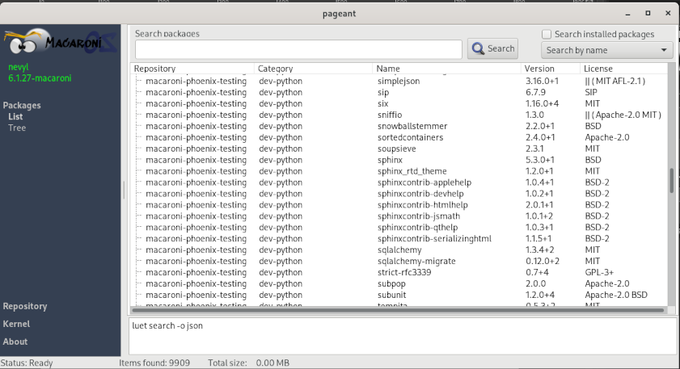
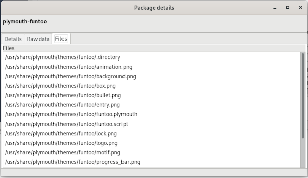

We are happy to announce the new release Phoenix 23.05 that contains
the first significant change needed to migrate the Phoenix tree from the
Funtoo release 1.4-prime to the Next release, an activity that will be
completed for the subsequent releases.
In particular, with this release is dropped the support of Python 2.7
in EOL for a lot of months. The package dev-lang-2.7/python is yet
available because a lot of Funtoo packages depend on it for compilation
but it’s discouraged the use.
Finally, we have started the documentation that now describes step-by-step how to install Macaroni OS under a new system and choose if to use a fully encrypted filesystem (only the boot partition will be clear but with GRUB asking for a password) or with a specific partition encrypted, for example, the /home. See Documentation Page for the detail and the Story to know how Macaroni OS is born. It’s been described how to use subsets to customize the installation of the selected packages and primarily we have tried to describe the main functions needed for a user. We will integrate the build process used to create user repositories in the next months. Stay tuned!
To increase the creativity of our users I think that is important to permit them to choose between different Desktop Environments, this is the reason that we have added support to LXQT v1.3.0 and i3 v4.22 thanks to their availability on Funtoo tree. The LXQT and i3 DE will be available yet as ISOs ready for the installation.
The new ISOs will be available in two/three days, just the time for the sync to the GARR mirror and for the CDN propagation.
What’s new
This new release has some interesting updates:
* LXD 5.12
* Libreoffice 7.5.2.2
* Firefox 112.0.2
* Brave 1.50.125
* Google Chrome 112.0.5615.165
* Grafana 9.5.1 and Prometheus 2.43.0
* Blender 3.5.1
* Inkscape 1.2.2
* Golang 1.20.3
* Virtualbox 7.0.8.156879
See the complete changelog on Github.
whip-catalog get power!
To improve the system check the following new hooks are been reviewed and/or added:
-
linking.check: The hook is been reviewed to correctly validate the libraries and/or binaries using third-party libraries under/optdirectory. -
vbox.vbox_setup: After the upgrade of Virtualbox I saw in some installation wrong permissions after the upgrade. This hook now restore the right permission and suid.$> whip h vbox.vbox_setup Ensure owner on vbox binary... Ensure execution bit on vbox binary... Ensure suid to vbox binary... [vbox.vbox_setup] Completed correctly.
New repositories names
To help users identify the repositories related to all available releases we have renamed our repositories as described here following the releases codename (phoenix, eagle, terragon).
Due to the logic implemented on luet about config protection after the
luet upgrade is needed to remove manually the old repository files:
$> # as root
$> /root # cd /etc/luet/repos.conf.d/
$> /etc/luet/repos.conf.d # rm macaroni-funtoo.yml
$> /etc/luet/repos.conf.d # ls -l
total 12
-rw-r--r-- 1 root root 307 Feb 20 09:12 macaroni-commons.yml
-rw-r--r-- 1 root root 304 May 15 18:14 macaroni-phoenix.yml
-rw-r--r-- 1 root root 280 Apr 6 21:04 mottainai-stable.yml
After this operation could be better cleanup orphans tree from the system and resync the tree:
$> luet cleanup --purge-repos
$> luet repo update
New Docker/LXD images names
Following the same reason used for the repositories also our Docker images will be renamed as described here and also the LXD images will be renamed in the next days.
What next?
Hereinafter, our hot points for the next releases:
-
Working on monthly releases of Terragon and Eagle
-
Add documentation about Macaroni tools (
whip,macaronictl,luet-portage-converter, etc.) and about Config Protect feature. -
Waiting for two/three months for an update it’s not always a good idea. For example, Discord apps become unusable. To resolve this issue we want to create a
macaroni-securityrepository where updates more frequently some packages: browsers, security patches, etc. -
Working on rewrite of
luet-buildbinary -
Starts migration of Phoenix release to Funtoo Next branch.
-
Following the idea of the
macaroni-securityrepository we are thinking of amacaroni-communityrepository where users could create their packages to share and also amacaroni-gameswhere share packages of games and emulators.
In July, we will in holiday so, probably the next release of Phoenix will be available in August.
A PMS GUI incoming!
I’m very happy that people begin to use Macaroni OS and I want to thank
a special user Marcello Basso aka nomorelogic who developing a GUI
for luet, available in our repository with the
name pageant that is been
written with Lazarus and Free Pascal and that could be used to search
packages, show files owned by packages and soon with others good features.
The pageant is yet in high development phase and is available as
version 0.0.4_alpha.

Hereinafter, the window where to see the detail of a package and his files.

We waiting for you
We waiting for you in our Discord Server.
Thanks
Many thanks to all Funtoo devs that are the sap of all this and to all people that helps us with testing and donations.
Support Us
Any user that wants to support our work for Macaroni could do this through the Github Sponsor.